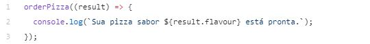
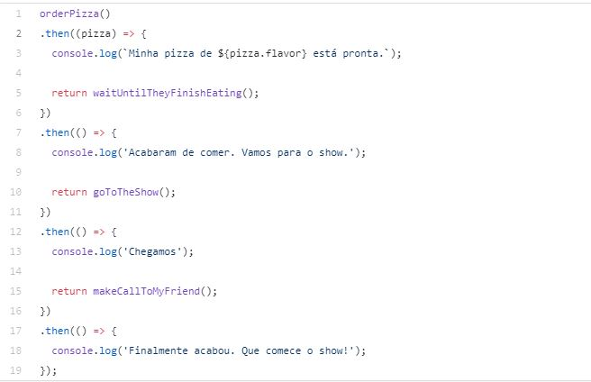

Introdução
Em JavaScript, um programa feito será executada de maneira única, do começo ao fim em sequencia, sem nada em pararelo, diferente do que é visto em Java ou C#. Por isso, para que seja criado um programa que rode operações em pararelo a execução no JavaScript é necessário colocar uma nova ferramenta, o AJAX.
CallBacks
Geralmente se deseja efetuar alguma ação quando uma operação assíncrona é concluída. Nos primeiro anos do Ajax, a maneira universal de se fazer isso era usando callbacks.

O Callback é uma função que é passada de argumento para outra função e, geralmente, só é executado quando alguma operação é concluída ou algum evento específico ocorre. O cenário de uso mais comum é quando as requisições Ajax são finalizadas.
Promises
A ideia das promises é representar fluxos assíncronos de forma sequencial/vertical/top-down, além de favorecer o tratamento de exceções.
Criando um exemplo de um caso onde uma pessoa comprou uma pizza, foi para a casa do amigo, esperou ele terminar de comer, após isso foi a um show onde assistiu-o,tudo isso pode ser resumido de uma maneira simples com promisses:

Ao final de cada then()(citado acima) é possível retornar um valor qualquer(objeto,array,string, etc.), no nosso caso, os comandos posteriores só aconteciam se os anteriores tivessem completos, como no caso da pizza, onde a pessoa só foi para a casa do amigo com a pizza depois que a pizza estava pronta(óbvio).
Simplificando o que é promisse:
Promisses são como cheques pré-datados. Um cheque recebido de tal pessoa representa uma garantia que irá receber o valor ali marcado no dia também marcado, se você tentar tirar antes da data o dinheiro não conseguirá, porém quando o requisito for atingido( A data) você pode retirar seu dinheiro.